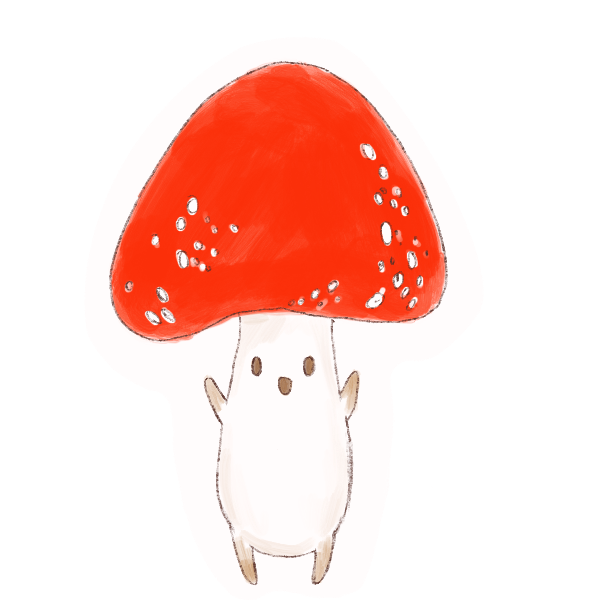
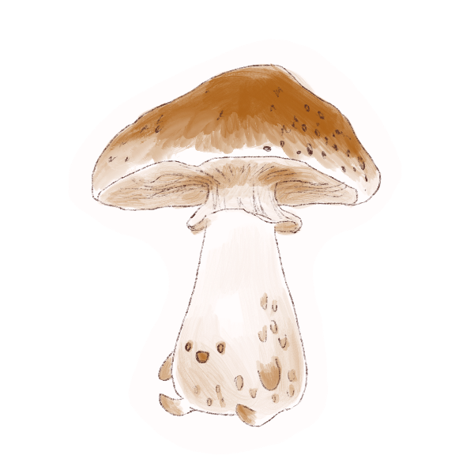

Agaricus bisporus
is the scientific name for mushroom. 01
is the scientific name for mushroom. 01
People call the inedible or poisonous mushrooms as toadstools. Edible and tasty mushrooms are called... MUSHROOMS!
02
There are over
10,000
different recorded species of mushrooms. 03
10,000
different recorded species of mushrooms. 03
Mushrooms are made up of
90% water. 04
Some mushrooms have more potassium than a whole banana.
05
Mushrooms do not photosynthesize, so they steal carbohydrates from other plants.
06
Mushrooms can live a day, a week, or a month depending on their size and environment.
07

Main benefit of mushrooms are immune support.
08
Mushrooms make their own wind.
09
Mushrooms are more closely related to humans than plants!
10
Mushrooms can grow in Mars.
11
Studies say that giant mushrooms covered the earth long before trees!
12
The oldest mushroom ever discovered was 810 million years old. It was discovered in the Democratic Republic of Congo.
13

Armillaria ostoyae, commonly known as the honey mushroom, is bigger than both animals and is considered the largest and oldest organism on Earth. The mushroom covers 3,726563 m2 of Malheur National Forest, Oregon, and is estimated to be around 8,650 years old.
14
Death cap is the deadliest mushroom in the world. Also known as Amanita phalloides. They are distributed across Europe, but now sprouting in other parts of the world.
15
Giant puffball mushrooms(Calvatia gigantea) are literally big and puffy balls that are edible too!
16
There are glow in the dark mushrooms! Panellus stipticus (bitter oyster) is one of the brightest glowing bioluminescent fungi.
17
China is the world’s largest producer of mushroom and truffles. They produces about 5 million tons annually.
18
European white truffles are on of the world’s most expensive mushrooms with a price of 2,200+ euros per pound.
19
Science proved that mushrooms could save the planet.
20